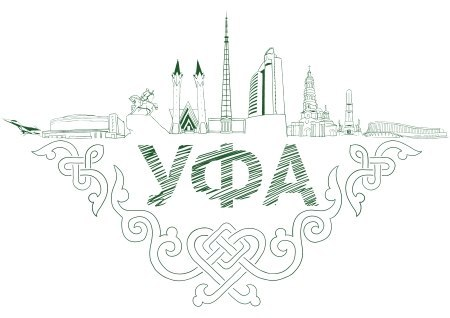
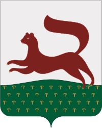
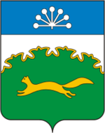

Ufa is the capital of Russia's Bashkortostan Republic. Located in the southern Urals, it is right on the border of Europe and Asia. The city has a population of 1.5 million, divided roughly equally between ethnic Russians, Bashkirs, and Tatars with Orthodox Christianity and Sunni Islam being the two major religions. Russian and Bashkir are the two official languages, although Tatar is also commonly spoken. Bashkortostan is well known for its agriculture, abundant minerals, booming energy sector, and its many famous writers and mathematicians. Ufa was recently the host city for the 2015 BRICS summit.
